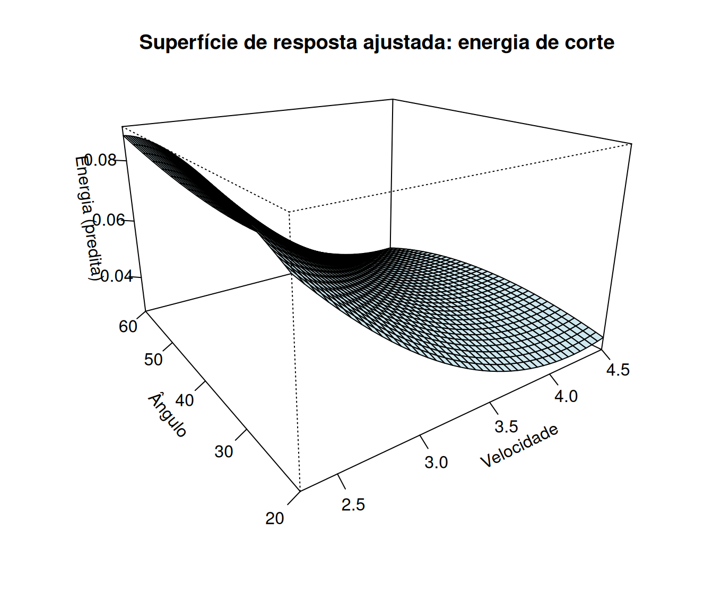
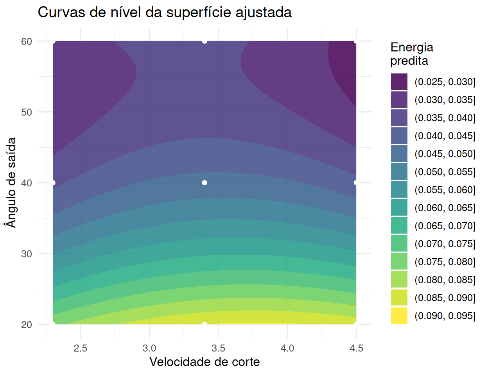
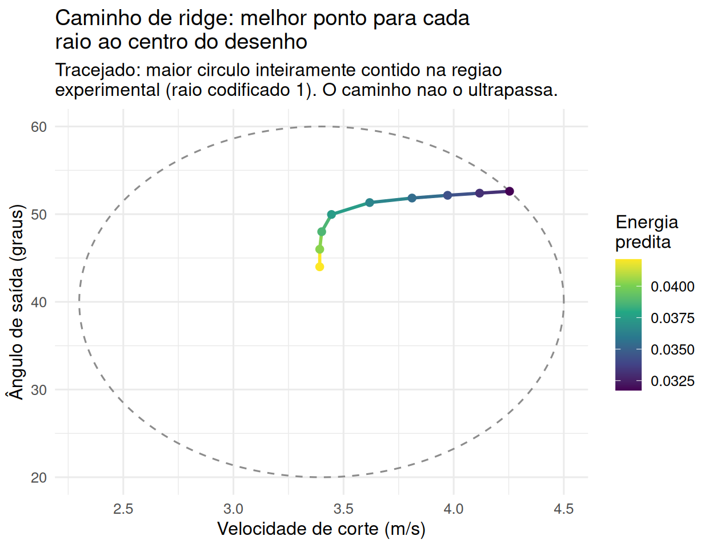

7.1 Introdução à superfície de resposta
Fatoriais \(2^k\) e \(3^k\) são desenhados para detectar e estimar efeitos — a pergunta é “quais fatores importam, e há interação?”. A metodologia de superfície de resposta (MSR), formalizada por Box e Wilson (1951) como uma sequência de fatoriais e desenhos aumentados que “escala” a superfície na direção de maior melhoria (Box et al., 2005; Montgomery, 2017), muda a pergunta para “qual combinação de níveis otimiza a resposta?”, tipicamente ajustando um modelo polinomial de segunda ordem que permite representar curvatura:
\[ y = \beta_0 + \sum_{i=1}^k \beta_i x_i + \sum_{i=1}^k \beta_{ii} x_i^2 + \sum_{i<j} \beta_{ij} x_i x_j + \varepsilon. \]
Os termos quadráticos \(\beta_{ii}\) são o que distingue este modelo do fatorial \(2^k\) (que só estima efeitos lineares e de interação): eles permitem capturar um máximo, mínimo ou ponto de sela dentro da região experimental, em vez de apenas uma tendência linear.
energia <- read_csv("data/energia.csv", show_col_types = FALSE)
modelo_rsm <- lm(
energia ~ Velocidad + angulo + I(Velocidad^2) + I(angulo^2) + Velocidad:angulo,
data = energia
)
summary(modelo_rsm)$coefficients %>%
round(4) %>%
kable(caption = "Modelo de segunda ordem para energia de corte") %>%
kable_styling(full_width = FALSE)| Estimate | Std. Error | t value | Pr(>|t|) | |
|---|---|---|---|---|
| (Intercept) | 0.0768 | 0.0479 | 1.6035 | 0.1193 |
| Velocidad | 0.0448 | 0.0260 | 1.7261 | 0.0946 |
| angulo | -0.0041 | 0.0010 | -3.9442 | 0.0004 |
| I(Velocidad^2) | -0.0055 | 0.0037 | -1.4864 | 0.1476 |
| I(angulo^2) | 0.0000 | 0.0000 | 3.6139 | 0.0011 |
| Velocidad:angulo | -0.0002 | 0.0001 | -1.0642 | 0.2957 |
O termo quadrático de \(\hat\beta_{\text{ângulo}^2}\) é altamente significativo (\(p<0{,}01\)), e o \(R^2\) ajustado do modelo (0.773) confirma que a superfície de segunda ordem descreve bem os dados — evidência de curvatura real, que um fatorial \(2^k\) nesses mesmos dois fatores nunca teria detectado, porque um desenho de apenas dois níveis por fator é algebricamente cego a termos quadráticos.


A perspectiva 3D e o gráfico de contorno são duas janelas para o mesmo objeto matemático: a primeira dá intuição sobre a forma geral da superfície (aqui, a energia sobe em algumas direções e desce em outras — um sinal visual de que a curvatura não é simplesmente “uma tigela”); a segunda é mais útil para leitura precisa, e para localizar exatamente onde a superfície para de subir ou descer.
7.1.1 Classificando o ponto estacionário: gradiente e Hessiana
Derivando o modelo de segunda ordem em relação a cada regressor e igualando a zero, o ponto estacionário \(\mathbf{x}_0\) resolve o sistema linear
\[ \nabla y(\mathbf{x}_0) = \mathbf{b} + 2\mathbf{B}\mathbf{x}_0 = \mathbf{0} \quad\Longrightarrow\quad \mathbf{x}_0 = -\tfrac{1}{2}\mathbf{B}^{-1}\mathbf{b}, \]
em que \(\mathbf{b} = (\hat\beta_{\text{Velocidad}}, \hat\beta_{\text{ângulo}})'\) é o vetor de coeficientes lineares e \(\mathbf{B}\) é a matriz simétrica dos coeficientes de segunda ordem (quadráticos na diagonal, de interação fora dela),
\[ \mathbf{B} = \begin{pmatrix} \hat\beta_{\text{Velocidad}^2} & \hat\beta_{\text{Velocidad}\cdot \text{ângulo}}/2 \\ \hat\beta_{\text{Velocidad}\cdot\text{ângulo}}/2 & \hat\beta_{\text{ângulo}^2} \end{pmatrix}. \]
Note que \(\mathbf{B}\) não é a Hessiana: do gradiente \(\nabla \hat y = \mathbf{b} + 2\mathbf{B}\mathbf{x}\) segue \(\nabla^2 \hat y = 2\mathbf{B}\). As duas matrizes têm os mesmos sinais de autovalores — por isso a classificação do ponto estacionário é a mesma —, mas são os autovalores de \(\mathbf{B}\), e não os da Hessiana, que aparecem como as taxas \(\lambda_i\) da forma canônica adiante.
A natureza do ponto estacionário — máximo, mínimo ou sela — é decidida pelos autovalores de \(\mathbf{B}\): ambos negativos indicam máximo, ambos positivos indicam mínimo, e sinais opostos indicam ponto de sela (a superfície sobe em uma direção do espaço dos regressores e desce em outra, exatamente o padrão sugerido pelo gráfico anterior).
b_rsm <- coef(modelo_rsm)
B_hess <- matrix(
c(2 * b_rsm["I(Velocidad^2)"], b_rsm["Velocidad:angulo"],
b_rsm["Velocidad:angulo"], 2 * b_rsm["I(angulo^2)"]),
nrow = 2
) / 2 # B tem beta_ii na diagonal e beta_ij/2 fora: o 2*.../2 da diagonal devolve
# o proprio beta_ii, e o termo de interacao fica dividido por 2
ponto_estacionario <- -0.5 * solve(B_hess) %*% c(b_rsm["Velocidad"], b_rsm["angulo"])
rownames(ponto_estacionario) <- c("Velocidade", "Ângulo")
ponto_estacionario## [,1]
## Velocidade 3.282264
## Ângulo 56.358108## [1] 4.158071e-05 -5.510702e-03Os dois autovalores têm sinais opostos — o ponto estacionário (\(V\approx3{,}28\), ângulo\(\approx56{,}4°\)) é uma sela, não um mínimo nem um máximo. Isso significa que, dentro da região experimental, o menor valor de energia predito não está nesse ponto interior, mas em algum ponto da fronteira da região — a varredura da grade confirma que o mínimo prático fica no canto \(V=4{,}5\), ângulo\(\approx59{,}0°\) (energia \(\approx0{,}027\)). Esse é exatamente o tipo de situação em que o gráfico de contorno é indispensável: sem ele, seria fácil confundir “a superfície tem curvatura” com “a superfície tem um ótimo interior”, quando na verdade tem as duas coisas ao mesmo tempo, mas não no mesmo ponto.
7.1.2 Análise canônica: além de classificar, descrever a forma da superfície
A classificação do ponto estacionário acima (máximo, mínimo ou sela) usa só os sinais dos autovalores de \(\mathbf{B}\). A análise canônica usa os autovalores e autovetores completos para reescrever o modelo ajustado numa base em que a curvatura fica diagonal — revelando não só que tipo de ponto estacionário existe, mas quão rápido a resposta muda em cada direção principal da superfície. Partindo do modelo centrado no ponto estacionário \(\mathbf{x}_0\), \(\hat y - \hat y_0 = (\mathbf{x}-\mathbf{x}_0)'\mathbf{B}(\mathbf{x}-\mathbf{x}_0)\), e da decomposição espectral \(\mathbf{B} = \mathbf{V}\boldsymbol\Lambda\mathbf{V}'\) (\(\mathbf{V}\) ortogonal, colunas = autovetores; \(\boldsymbol\Lambda=\text{diag}(\lambda_1,\lambda_2)\)), a mudança de variável \(\mathbf{w} = \mathbf{V}'(\mathbf{x}-\mathbf{x}_0)\) (uma rotação de eixos, não uma translação arbitrária) elimina o termo cruzado: \[ \hat y = \hat y_0 + \lambda_1 w_1^2 + \lambda_2 w_2^2. \]
decomp <- eigen(B_hess)
V_rot <- decomp$vectors
lambda_canonico <- decomp$values
y0_chapeu <- predict(modelo_rsm, newdata = as.data.frame(t(ponto_estacionario)) %>%
setNames(c("Velocidad", "angulo")))
list(y0 = unname(y0_chapeu), lambda = lambda_canonico, eixos_w = V_rot)## $y0
## [1] 0.03579915
##
## $lambda
## [1] 4.158071e-05 -5.510702e-03
##
## $eixos_w
## [,1] [,2]
## [1,] 0.01381628 -0.99990455
## [2,] -0.99990455 -0.01381628Os eixos canônicos \(w_1,w_2\) são combinações lineares (rotacionadas) de velocidade e ângulo — não correspondem a nenhum dos dois fatores originais isoladamente. O sinal oposto de \(\lambda_1\approx\) 4.16^{-5} e \(\lambda_2\approx\) -0.00551 é a mesma informação da Seção 7.1.1 (sela), mas agora quantificada. A leitura dos sinais é direta: ao longo de \(w_i\) a superfície sobe se \(\lambda_i>0\) e desce se \(\lambda_i<0\), a uma taxa dada por \(|\lambda_i|\). Aqui \(\lambda_1>0\) e \(\lambda_2<0\): a superfície sobe ao longo de \(w_1\) e cai ao longo de \(w_2\).
O que a análise canônica acrescenta à simples classificação do ponto estacionário é a escala relativa das duas curvaturas. Como \(|\lambda_2|/|\lambda_1| \approx\) 133, a sela é fortemente alongada: ao longo de \(w_1\) a superfície é quase plana, enquanto ao longo de \(w_2\) ela muda duas ordens de grandeza mais rápido. É \(w_2\) — a direção de maior \(|\lambda|\) — que domina o comportamento local da resposta, e é nela que vale a pena mover o processo. Uma crista quase plana como a de \(w_1\) é, na prática, uma faixa de combinações velocidade/ângulo praticamente equivalentes em energia: liberdade para otimizar outro critério (custo, desgaste de ferramenta) sem perda mensurável nesta resposta (Myers et al., 2016).
7.1.3 Análise de ridge: otimizando dentro de um raio fixo da região experimental
Dois problemas distintos tornam o ponto estacionário um alvo insuficiente. O primeiro é ele cair fora da região onde os dados foram coletados: aí segui-lo é extrapolar, e o modelo de segunda ordem só é confiável dentro da nuvem de pontos observados. O segundo — o caso deste exemplo, em que \(\mathbf{x}_0=(3.28\text{ m/s};\ 56.4^\circ)\) está confortavelmente dentro dos dados — é o ponto estacionário ser uma sela: ele não é nem máximo nem mínimo, de modo que “ir até \(\mathbf{x}_0\)” simplesmente não responde à pergunta de otimização.
A análise de ridge (Myers et al., 2016) contorna os dois casos com uma pergunta mais modesta: para cada raio fixo \(\rho\) (distância ao centro do desenho), qual é o melhor ponto sobre o círculo (ou esfera, em mais dimensões) de raio \(\rho\)? Isso é otimização restrita — otimizar \(\hat y(\mathbf{x})\) sujeito a \(\mathbf{x}'\mathbf{x}=\rho^2\) —, cuja condição de estacionariedade de Lagrange é \[ \mathbf{b} + 2\mathbf{B}\mathbf{x} = 2\mu\,\mathbf{x} \quad\Longleftrightarrow\quad \mathbf{x}(\mu) = \tfrac{1}{2}(\mu\mathbf{I}-\mathbf{B})^{-1}\mathbf{b}, \] em que o multiplicador de Lagrange \(\mu\) é ajustado até que \(\lVert\mathbf{x}(\mu)\rVert=\rho\).
A condição de estacionariedade sozinha não basta: para um mesmo \(\rho\) ela admite várias raízes \(\mu\), e cada uma corresponde a um ponto crítico diferente sobre o círculo. A escolha do ramo é o que decide qual delas é a resposta procurada (Draper, 1963; Myers et al., 2016):
\[ \mu > \lambda_{\max}(\mathbf{B}) \;\Rightarrow\; \textbf{máximo restrito}, \qquad \mu < \lambda_{\min}(\mathbf{B}) \;\Rightarrow\; \textbf{mínimo restrito}, \]
e dentro de cada ramo \(\lVert\mathbf{x}(\mu)\rVert\) é monótona em \(\mu\), o que torna o ajuste de \(\mu\) a um \(\rho\) desejado um problema unidimensional bem posto. Fora desses dois ramos obtêm-se pontos de sela da função restrita — críticos, mas nem máximo nem mínimo. Varrendo \(\rho\) de \(0\) até a borda da região experimental, obtém-se o caminho de ridge: a sequência de pontos ótimos-restritos, um para cada raio.
Velocidade e ângulo estão em escalas e unidades muito diferentes (\(2{,}3\)–\(4{,}5\text{ m/s}\) contra \(20°\)–\(60°\)) — um “raio” euclidiano só faz sentido depois de codificar as duas variáveis para uma escala comum, a mesma convenção de \(\pm1\) já usada em todo o livro para fatoriais.
c_vel <- mean(range(energia$Velocidad)); s_vel <- diff(range(energia$Velocidad)) / 2
c_ang <- mean(range(energia$angulo)); s_ang <- diff(range(energia$angulo)) / 2
energia_cod <- energia %>%
mutate(z1 = (Velocidad - c_vel) / s_vel, z2 = (angulo - c_ang) / s_ang)
modelo_rsm_cod <- lm(energia ~ z1 + z2 + I(z1^2) + I(z2^2) + z1:z2, data = energia_cod)
b_cod <- coef(modelo_rsm_cod)[c("z1", "z2")]
B_cod <- matrix(
c(2 * coef(modelo_rsm_cod)["I(z1^2)"], coef(modelo_rsm_cod)["z1:z2"],
coef(modelo_rsm_cod)["z1:z2"], 2 * coef(modelo_rsm_cod)["I(z2^2)"]),
nrow = 2
) / 2
y0_cod <- coef(modelo_rsm_cod)["(Intercept)"]# Ate onde o raio pode ir sem extrapolar? A regiao experimental e a CAIXA
# [-1,1]^2 (grade 3x3 em unidades codificadas). O circulo de raio rho so fica
# inteiramente dentro da caixa ate rho = 1 (circulo INSCRITO); a partir dai ele
# escapa pelos lados, tocando o desenho apenas nos quatro vertices, que estao a
# raio sqrt(2). Paramos em 1: e o maior raio para o qual NENHUMA direcao theta
# leva para fora dos dados.
raio_max <- 1
raios <- seq(0.2, raio_max, by = 0.1)
y_no_circulo <- function(theta, rho) {
z_theta <- rho * c(cos(theta), sin(theta))
as.numeric(y0_cod) + as.numeric(t(z_theta) %*% b_cod) + as.numeric(t(z_theta) %*% B_cod %*% z_theta)
}
caminho_ridge <- map_dfr(raios, function(rho) {
# y_no_circulo(theta) tem em geral DOIS mínimos e DOIS máximos em [0,2pi) (forma quadrática
# indefinida sobre um círculo) -- optimize() assume unimodalidade e pode convergir para um
# mínimo local errado; uma busca em grade fina, seguida de refinamento local, é mais confiável.
grade_theta <- seq(0, 2 * pi, length.out = 721)[-721]
th0 <- grade_theta[which.min(sapply(grade_theta, y_no_circulo, rho = rho))]
opt <- optimize(function(th) y_no_circulo(th, rho),
interval = c(th0 - 2 * pi / 360, th0 + 2 * pi / 360), maximum = FALSE)
z_theta <- rho * c(cos(opt$minimum), sin(opt$minimum))
tibble(raio = rho, Velocidad = c_vel + s_vel * z_theta[1], angulo = c_ang + s_ang * z_theta[2],
y_predito = opt$objective)
})
# Fronteira da regiao experimental, para deixar visivel que o caminho fica dentro dela.
fronteira <- tibble(theta = seq(0, 2 * pi, length.out = 361)) %>%
mutate(Velocidade = c_vel + s_vel * raio_max * cos(theta),
`Ângulo` = c_ang + s_ang * raio_max * sin(theta))
caminho_ridge %>%
rename(Velocidade = Velocidad, `Ângulo` = angulo) %>%
ggplot(aes(Velocidade, `Ângulo`)) +
geom_path(data = fronteira, linetype = "dashed", color = "grey55") +
geom_path(aes(color = y_predito), linewidth = 1) +
geom_point(aes(color = y_predito), size = 2) +
scale_color_viridis_c(name = "Energia\npredita") +
labs(title = "Caminho de ridge: melhor ponto para cada\nraio ao centro do desenho",
subtitle = paste0("Tracejado: maior circulo inteiramente contido na regiao\nexperimental ",
"(raio codificado ", round(raio_max, 2), "). O caminho nao o ultrapassa."),
x = "Velocidade de corte (m/s)", y = "Ângulo de saída (graus)") +
theme_minimal(base_size = 12)
O caminho de ridge sai do centro do desenho e se afasta em direção à combinação de velocidade/ângulo que minimiza a energia predita a cada raio — aqui o objetivo é minimizar, porque energia de corte é custo; o problema de máximo é o mesmo com o sinal trocado, e corresponde ao ramo \(\mu > \lambda_{\max}(\mathbf{B})\) da condição de Lagrange. O raio só é bem definido porque as duas variáveis foram trazidas à mesma escala.
Duas observações sobre o que a figura mostra. Primeira: o caminho para no círculo tracejado. Vale explicitar por que o limite é \(\rho=1\) e não \(\rho=\sqrt2\). A região experimental aqui é a caixa \([-1,1]^2\) — uma grade \(3\times3\) —, enquanto o caminho de ridge percorre círculos. O maior círculo inteiramente contido na caixa é o inscrito, de raio \(1\); o círculo de raio \(\sqrt2\approx1{,}41\) toca o desenho apenas nos quatro vértices e, em todas as demais direções, já está fora dos dados. Como a direção ótima \(\theta\) é escolhida pelo próprio procedimento, e não por nós, só \(\rho\le1\) garante que nenhuma direção escolhida seja extrapolação — que é a disciplina que esta seção prega e precisa praticar. (Em desenhos cuja região é esférica por construção, como o CCD rotacionável da próxima seção, essa distinção desaparece: lá a região é um círculo, e o raio axial \(\alpha\) é o limite natural.) Segunda: em vez de relatar apenas “o mínimo fica na fronteira”, como fizemos antes, o caminho mostra toda a trajetória de pontos ótimos-restritos, permitindo ao engenheiro escolher conscientemente um raio que equilibre ganho na resposta e proximidade da região onde o modelo foi de fato estimado — quanto maior o raio, maior o ganho predito e maior a incerteza sobre ele.